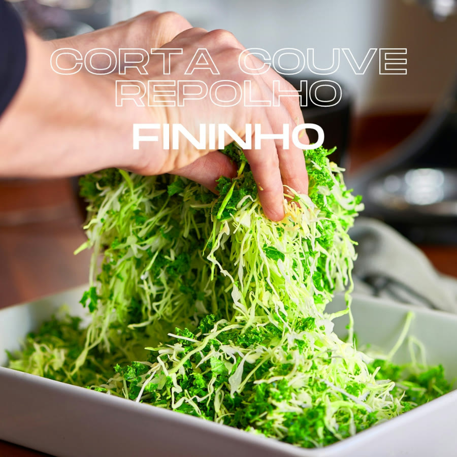
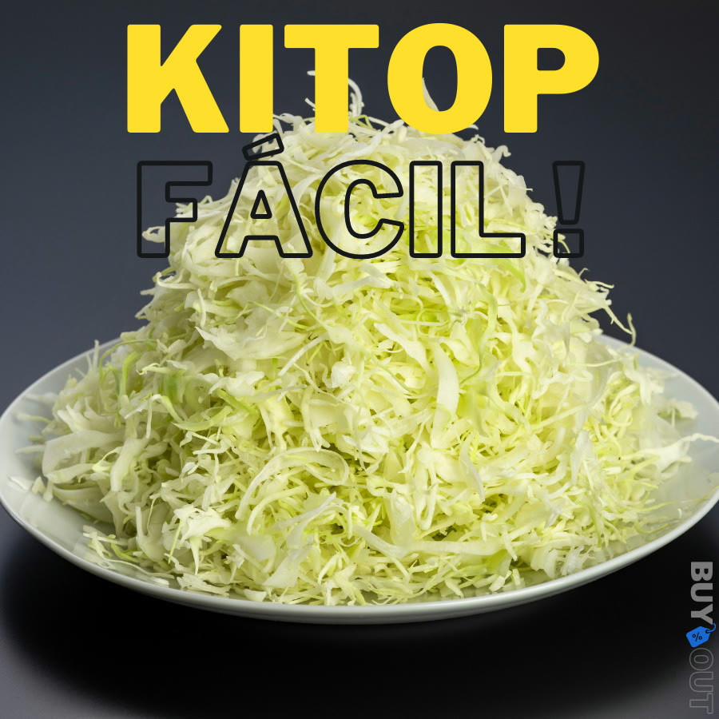
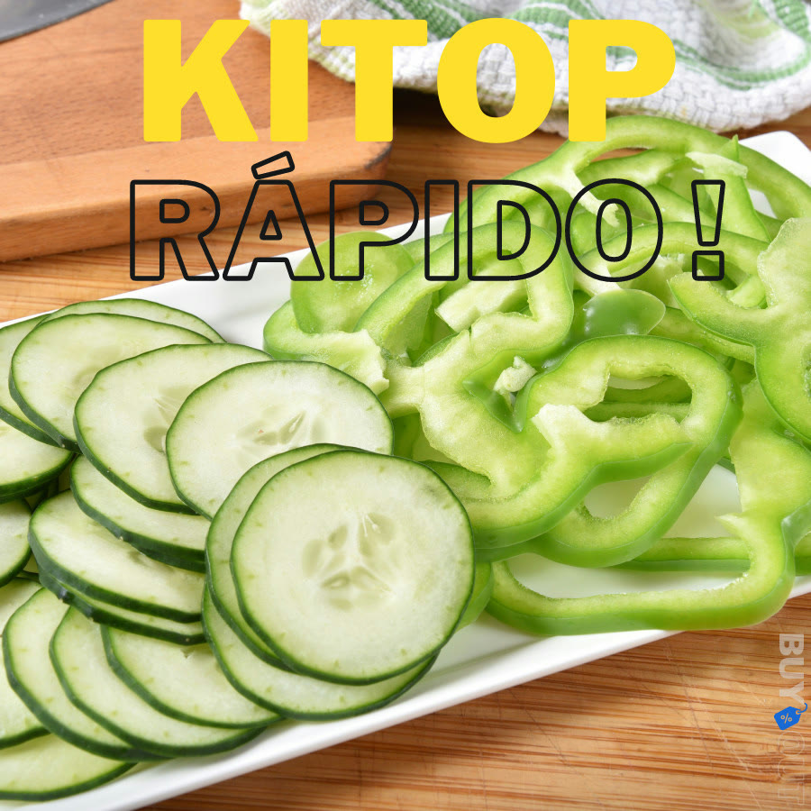
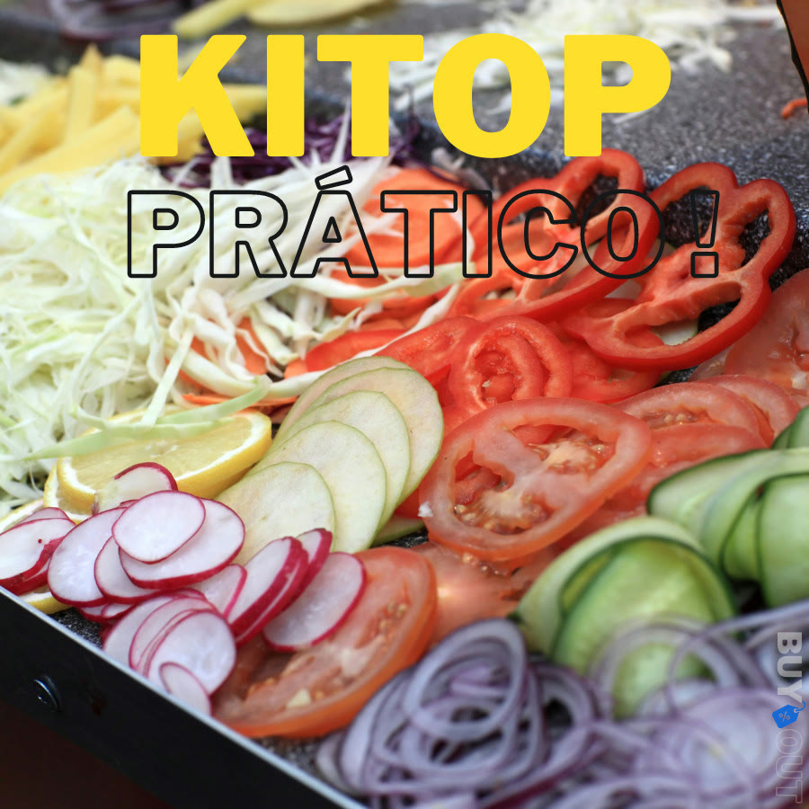

Achado nº 51
Fatiador KITOP para couve e repolho fininhos





O que diz a página oficial do produto
- É um fatiador manual da marca Kitop, de plástico PP com lâmina de aço inox
- Segundo o anúncio, é só deslizar sobre o alimento para cortar couve e repolho fininhos, e também fatiar legumes e frutas
- Segundo o anúncio, o formato foi pensado para proteger os dedos durante o uso
- Mede 23 cm de comprimento e 6 cm de largura
- Tem várias cores no anúncio e uma versão para canhoto
- Na Shopee, tem nota 4,8 com mais de 6.500 avaliações e mais de 10 mil vendidos
Link de afiliado: se você comprar por ele, a Achadaria pode receber uma comissão, sem custo extra para você. Preço, estoque e entrega são da loja e podem mudar; confira lá antes de comprar.